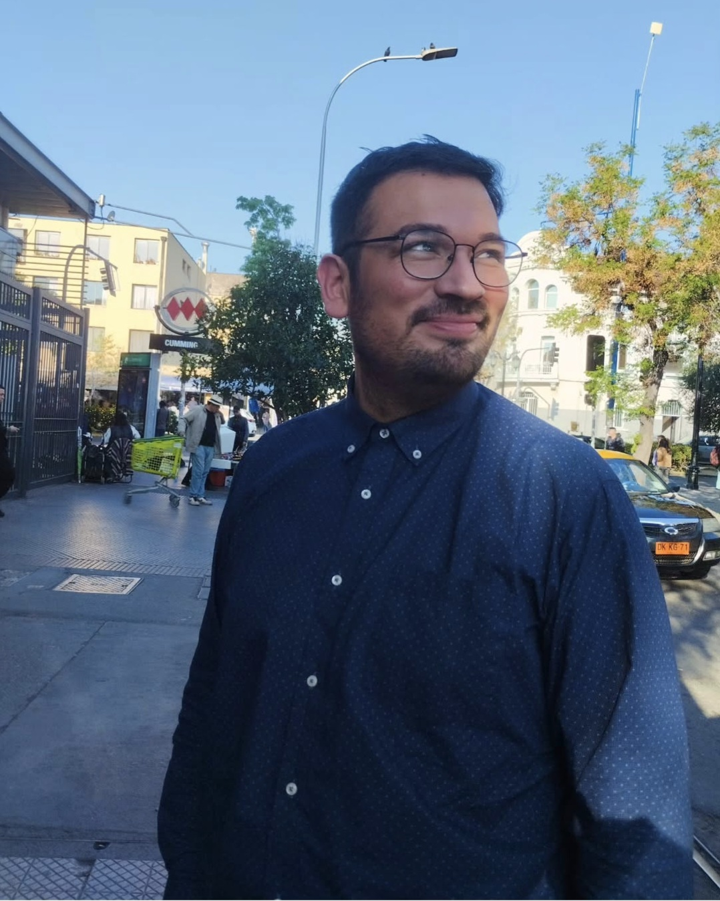
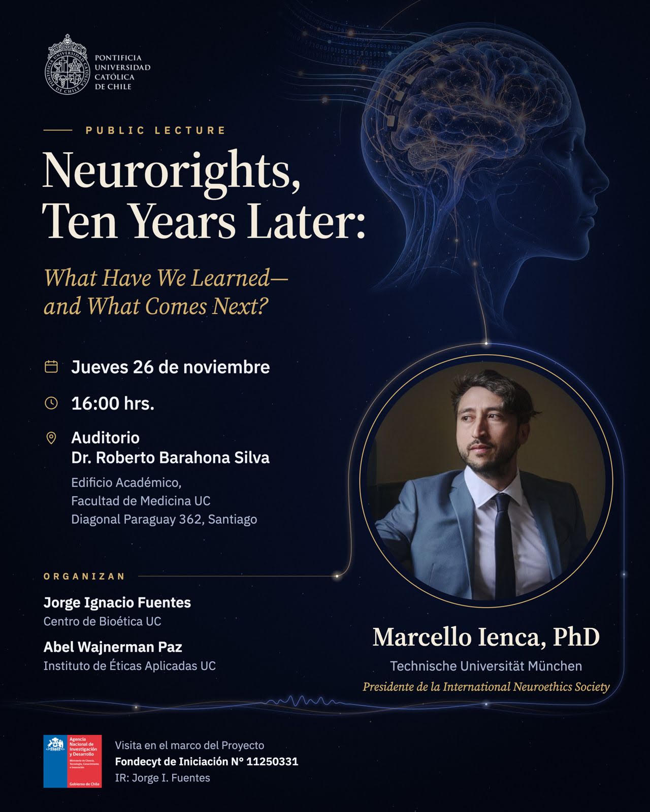
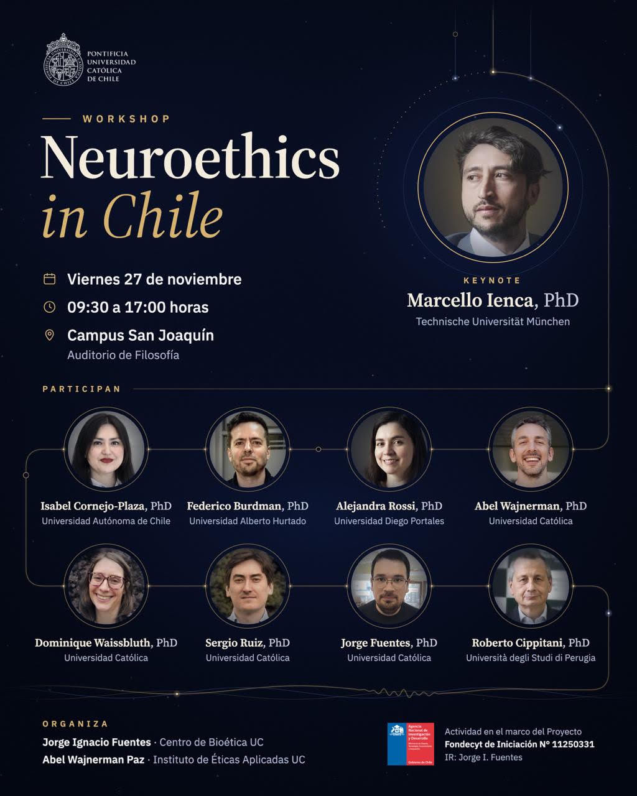

Jorge Ignacio Fuentes
Filósofo
Philosopher
Soy profesor asistente del Centro de Bioética UC de la Pontificia Universidad Católica de Chile, aunque mi camino comenzó con los números. Me formé primero en Educación en Ciencias Exactas y obtuve el título de Profesor de Educación Media en Matemáticas y Física en la Universidad de Chile. Con el tiempo me fue interesando más lo que significa la ciencia y cómo sus resultados impactan en la manera en que entendemos la realidad. Por eso cursé el Magíster en Filosofía de las Ciencias en la Universidad de Santiago y luego el Doctorado en Filosofía en la Universidad Alberto Hurtado. Esa mezcla de rigor científico y curiosidad filosófica sigue guiando mi trabajo. Me especializo en neuroética, bioética, filosofía de la neurociencia cognitiva y metafísica, y estudio los problemas ontológicos, epistemológicos y éticos que plantea la computación neuronal y la computación artificial. Actualmente investigo qué ocurre cuando el cerebro humano y los implantes neurotecnológicos empiezan a trabajar juntos. Si un dispositivo participa en cómo pensamos, decidimos y actuamos, ¿qué pasa con nuestra agencia y con nuestra identidad personal, es decir, con aquello que somos?
I’m an Assistant Professor at the Centro de Bioética UC at the Pontificia Universidad Católica de Chile, but my path began with numbers. I first trained in Exact Sciences Education and qualified as a Secondary School Teacher of Mathematics and Physics at the Universidad de Chile. Over time, I became more interested in what science means and in how its findings shape the way we understand reality. That led me to the Master’s in Philosophy of Science at the Universidad de Santiago, and then to the Ph.D. in Philosophy at the Universidad Alberto Hurtado. That mix of scientific rigor and philosophical curiosity still guides my work. I specialize in neuroethics, bioethics, the philosophy of cognitive neuroscience, and metaphysics, and I study the ontological, epistemological, and ethical problems raised by neural and artificial computation. My current research looks at what happens when the human brain and neurotechnological implants begin to work together. If a device takes part in how we think, decide, and act, what happens to our agency and to our personal identity, that is, to what we are?
PublicacionesPublications
PróximamenteForthcoming · Neuroethics
Authorship as a Distinct Ethical Dimension in Speech BCIs
Fuentes, J. I., Burdman, F., & Wajnerman-Paz, A. Neuroethics.
PróximamenteForthcoming · Oxford University Press
A Mechanistic Account of Physical Computation
Fuentes, J. I., & Piccinini, G. In Oxford Handbook of Philosophy of Computer Science. R. Turner, N. Angius & H. Stephanou (eds.). Oxford University Press.
2026 · Minds and Machines
Autopoietic Bodily Integrity: A Biological Approach to Hybrid Minds
Wajnerman-Paz, A., Villalobos, M., & Fuentes, J. I. Minds and Machines, 36(3), 37.
2026 · MetaScientia
Computation Without Users: A Brief Commentary on The Physical Signature of Computation
Fuentes, J. I. MetaScientia: Journal of the History and Philosophy of Science.
2025 · Springer
A Situated Approach to Neurorights Legislation in Chile
Fuentes, J. I., Ramos Vergara, P., Wajnerman Paz, A., López-Silva, P., & Álamos, F. In P. López-Silva (ed.), Contextualizing Neuroprotection: Latin American Perspectives on the Impact of Neurotechnological Development in Life and Society. Ethics of Science and Technology Assessment, vol. 54. Springer, Cham.
2025 · Daimon
The Necessity of Practical Wisdom
Fuentes, J. I. Daimon. Revista Internacional de Filosofía, (96), 173–191.
2024 · Revista de Filosofía
El Rol de la Agencia en la Identidad Híbrida de los Pacientes Neurotecnológicos
Fuentes, J. I., & Wajnerman Paz, A. Revista de Filosofía, 81, 225–251.
2024 · Synthese
Computational Systems as Higher-Order Mechanisms
Fuentes, J. I. Synthese, 203(2), 55.
2023 · Philosophical Psychology
Efficient Mechanisms
Fuentes, J. I. Philosophical Psychology.
LibrosBooks
PróximamenteForthcoming · Tirant lo Blanch
Tecnologías Biomédicas desde la Perspectiva de la Dignidad Humana
Fuentes, J. I., y Głos, A. (eds.). Libro editado. Tirant lo Blanch.Fuentes, J. I., & Głos, A. (eds.). Edited volume. Tirant lo Blanch.
Contrato firmado · mayo 2026Contract signed · May 2026
Cambridge Elements in Bioethics and Neuroethics
Libro en coautoría con Abel Wajnerman Paz. Cambridge University Press.Book co-authored with Abel Wajnerman Paz. Cambridge University Press.
Contrato firmado · octubre 2025Contract signed · October 2025
Cambridge Elements in Metaphysics
Libro en coautoría con Gualtiero Piccinini. Cambridge University Press.Book co-authored with Gualtiero Piccinini. Cambridge University Press.
ProyectosProjects
2025 – 2028
A Conceptual Neuroethics Approach to the Interaction between Neural Computation and Artificial Computation: Implications for Personal Identity and Agency
Investigador Responsable. FONDECYT de Iniciación N° 11250331 (abril 2025 – marzo 2028).
Principal Investigator. FONDECYT Initiation Grant No. 11250331 (April 2025 – March 2028).
2025 – 2027
Tecnologías Biomédicas desde la Perspectiva de la Dignidad Humana
Investigador Responsable. Proyecto UC de Investigación y Creación para Académicos, DPCC2024-102810.
Principal Investigator. UC Research and Creation Project for Faculty, DPCC2024-102810.
2026
Reflexión Ética en el Cuidado a través de la Simulación como Herramienta en la Formación Integral de Internos de Enfermería
Coinvestigador. FONDEDOC UC 2026.
Co-investigator. FONDEDOC UC 2026.
Ver másSee more
Participación en MediosMedia
Febrero 2026February 2026 · The Brain’s Blog
A Global Approach to Cognitive Dysfunction as a Framework for Neurodivergence
Entrada en coautoría con Abel Wajnerman-Paz.Post co-authored with Abel Wajnerman-Paz.
Organización de Eventos AcadémicosOrganized Academic Events

26 de noviembre de 2026 · 16:00 hNovember 26, 2026 · 4:00 p.m.
Clase públicaPublic Lecture: Neurorights, Ten Years Later: What Have We Learned—and What Comes Next?
Clase de Marcello Ienca, presidente de la International Neuroethics Society. Auditorio del Edificio Académico de la Facultad de Medicina, Pontificia Universidad Católica de Chile. Actividad del Proyecto FONDECYT de Iniciación N.º 11250331.Lecture by Marcello Ienca, President of the International Neuroethics Society. Auditorium of the Academic Building, Faculty of Medicine, Pontificia Universidad Católica de Chile. Activity of FONDECYT Initiation Grant No. 11250331.

27 de noviembre de 2026 · 09:30 – 17:00 hNovember 27, 2026 · 9:30 a.m. – 5:00 p.m.
Workshop: Neuroethics in Chile
Jornada que reúne a distintas voces de la neuroética en Chile e incluye la conferencia de Marcello Ienca “Who Owns the Mind? Neurorights from a Philosophical Idea to Global Governance”. Auditorio de Filosofía, Campus San Joaquín UC. Actividad del Proyecto FONDECYT de Iniciación N.º 11250331.A workshop bringing together different voices in Chilean neuroethics, including Marcello Ienca’s lecture “Who Owns the Mind? Neurorights from a Philosophical Idea to Global Governance”. Philosophy Auditorium, San Joaquín Campus, Pontificia Universidad Católica de Chile. Activity of FONDECYT Initiation Grant No. 11250331.
BecasFellowships
- 2020 – 2024Becario de Doctorado Nacional ANID, folio 21202030.ANID National Doctoral Scholarship, No. 21202030.
- 2022 – 2023Pasantía doctoral ANID en la University of Missouri – St. Louis (diciembre 2022 – julio 2023), a cargo del profesor Gualtiero Piccinini.ANID doctoral research stay at the University of Missouri – St. Louis (December 2022 – July 2023), supervised by Professor Gualtiero Piccinini.
Otros AntecedentesOther Activities
- Editor asociado deAssociate Editor of The Brain’s Blog (2025–).
- Miembro del grupo de investigaciónMember of the research group Neuroética Buenos Aires (NEBA).
- Miembro del grupo de investigación MindMU de la University of Missouri–Columbia.Member of the MindMU research group at the University of Missouri–Columbia.
- Miembro de la Sociedad Chilena de Filosofía de las Ciencias (SOCHIFIC).Member of the Chilean Society for Philosophy of Science (SOCHIFIC).
Exposiciones en Eventos AcadémicosConference Presentations
- 2026“Propiedad y autoría en el uso médico de herramientas computacionales para la producción de discurso”, Ciclo de Conferencias del Grupo de Estudios en Ética Teórica y Aplicada, Universidad Alberto Hurtado.
- 2026(conwith Gualtiero Piccinini) “Levels of Organization as Natural Kinds”, Workshop Scientific Pluralism, Ontology, and Values, Universidad Alberto Hurtado.
- 2026(conwith Maribel Barroso) “Reasoning with inconsistent models in physics”, 1st International Congress of the Chilean Society for Philosophy of Science (SOCHIFIC).
- 2026(conwith Maribel Barroso) “There are no ‘inconsistent models’”, 6th Workshop on Philosophy of Science, Universidad de Chile.
- 2026(conwith Gualtiero Piccinini) “Levels of Organization”, 1st International Congress of the Chilean Society for Philosophy of Science (SOCHIFIC).
- 2026(conwith Abel Wajnerman Paz) “A Global Approach to Cognitive Dysfunction as a Framework for Neurodivergence”, Institut für Geschichte und Ethik der Medizin, Technische Universität München, AlemaniaGermany.
- 2025(conwith Gualtiero Piccinini) “Levels of Organization”, Philosophy of Science Association (PSA) Around the World.
- 2025(conwith Abel Wajnerman Paz) “A Global Approach to Cognitive Dysfunction as a Framework for Neurodivergence”, Workshop Cognition and Agency in Mental Disorder, Universidad Alberto Hurtado, Santiago de Chile.
- 2025“Interfaces cerebro-computadora: ¿intenciones humanas ejecutadas por máquinas?”, Workshop sobre Información y Sentido, Semana de la IA, Universidad Alberto Hurtado.
- 2024(conwith Gualtiero Piccinini) “Levels of Organization”, 9th Meeting Online of the Society for the Metaphysics of Science.
- 2024(conwith Abel Wajnerman Paz yand Mario Villalobos) “Autopoietic bodily integrity”, Workshop Ciencia, Sociedad y Valores, Sociedad Chilena de Filosofía de las Ciencias (SOCHIFIC).
- 2024(conwith Abel Wajnerman Paz) “Other artificial minds”, Neuroscience and Pseudo-neuroscience: The Testability of Our Theories of Consciousness, Santiago de Chile.
- 2024(conwith Abel Wajnerman Paz) “A mechanistic hybrid theory of personal identity”, 2nd Annual Web Conference of the International Society for the Philosophy of the Sciences of the Mind.
- 2023“Higher-order mechanistic explanation”, 1st Annual Web Conference of the International Society for the Philosophy of the Sciences of the Mind.
- 2022“Un enfoque etiológico acerca de la funcionalidad en el mecanicismo contemporáneo”, Jornadas Rolando Chuaqui de Filosofía y Ciencias.
- 2022“Naturaleza dada y naturaleza final en la ética aristotélica: eudaimonía como segunda actualización del conocimiento”, Congreso de Estudiantes de Filosofía, Universidad Alberto Hurtado.
- 2019(conwith Rodrigo Barrera) “Distribución normal, ¿una universalidad forzada?”, Jornadas Rolando Chuaqui de Filosofía y Ciencias.
- 2019“¿Estructuras actuales o posibles?: lecciones del debate sobre el estatus ontológico modal de las estructuras matemáticas”, Jornadas Rolando Chuaqui de Filosofía y Ciencias.
- 2018(conwith Wilfredo Quezada) “Necesitismo y contingentismo modal. Prospectos de sus formulaciones en filosofía de la matemática contemporánea”, Jornadas Rolando Chuaqui de Filosofía y Ciencias.
- 2017“Pluralismo lógico: ¿por qué la propuesta de Haack falla?”, Jornadas Rolando Chuaqui de Filosofía y Ciencias.
- 2016(conwith Wilfredo Quezada yand Luis Pavez) “Identidad y causalidad: ¿importa la naturaleza cuántica o no cuántica de las entidades involucradas?”, Jornadas Rolando Chuaqui de Filosofía y Ciencias.
- 2010(conwith Gonzalo Gutiérrez yand Diego Contreras) “Propiedades mecánicas y termodinámicas de biomateriales mediante simulación computacional”, Simposio SOCHIFI Pucón.